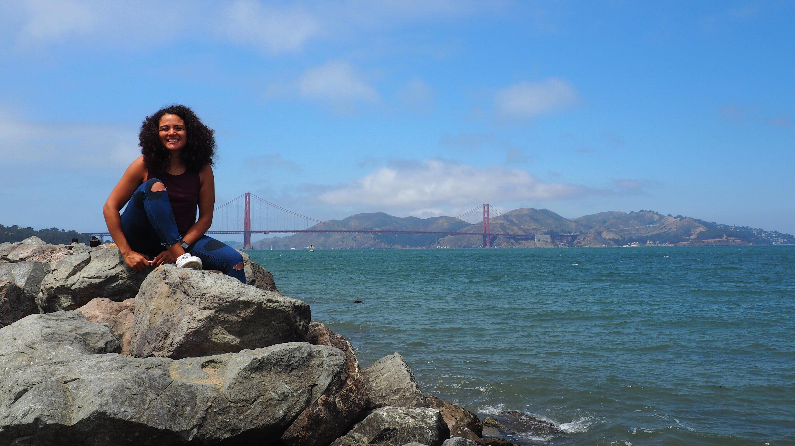
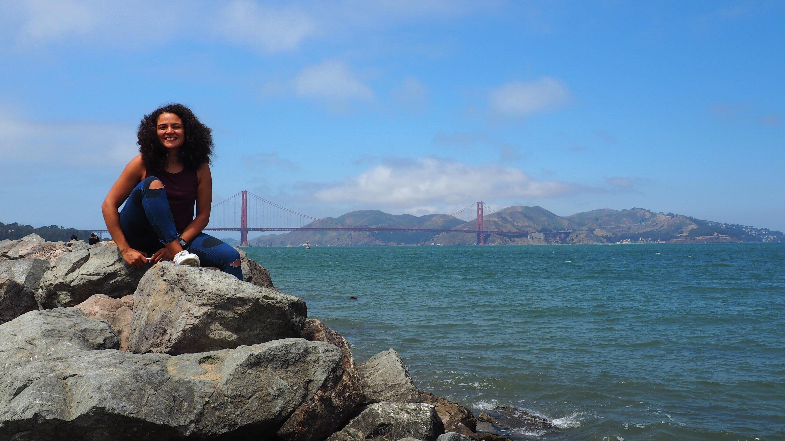

About Me
A Research Scientist, a Problem-Solver, and a Curious Mind.
I'm L. Fariñas, a Telecommunications Engineer with a PhD in Biomedical Engineering, currently working as an Ikerbasque Research Fellow at the Deusto Institute of Technology (DeustoTech). My work is driven by a simple idea: using ultrasound technology to understand the unseen and unheard. I develop non-destructive and non-invasive techniques to characterize complex materials and monitor processes, all to generate new knowledge and solve challenging problems. It's like finding a hidden language in the world around us. Of course, the key point is pushing hard, because the most impactful problems often carry the highest risks.
My Journey Across Labs and Disciplines
My scientific adventure has taken me to some incredible places. I’ve had the chance to work at amazing national centers like the Spanish National Research Council (CSIC) and the Technical University of Valencia, as well as renowned international institutions like MIT, the University of Glasgow, Harvard, and the University of California.
This journey has given me a truly multidisciplinary perspective, allowing me to apply my skills in diverse fields like non-destructive testing, plant ecophysiology, and food technology. I believe a scientist's responsibility goes beyond the lab, which is why I'm always looking for ways to share my knowledge and see it applied in the real world. In fact, I came close to creating a spin-off focused on the rapid, non-invasive inspection of battery cells for production lines. It was a fantastic experience that taught me a lot about deep-tech, transference, and even about the world and the people, which is key in any job, including academia.
My Global Experience
A visual snapshot of collaborations, conferences, and research projects around the world.
Beyond the Lab
Science is a big part of who I am, but not the whole story. When I'm not in the lab, I love movies, doing sports, traveling, and discovering.
 
